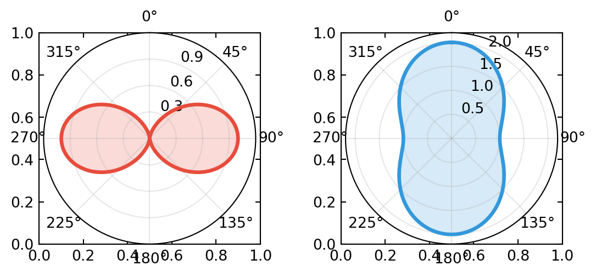
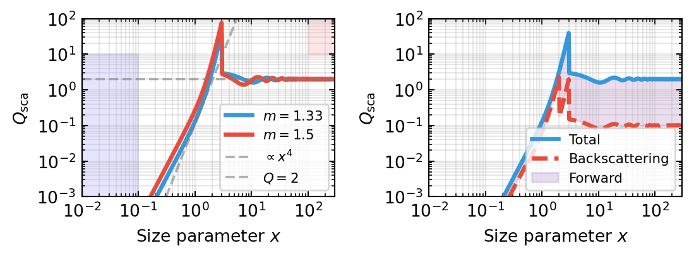
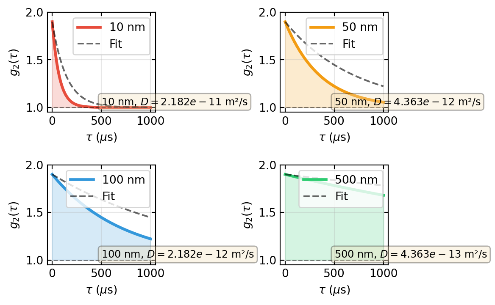
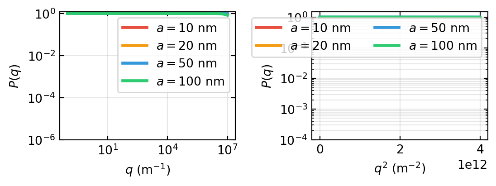

When light encounters matter, it does not always pass straight through. Instead, light can be scattered in all directions. This fundamental phenomenon is everywhere: the blue sky above, red sunsets, the white appearance of milk, and the visibility of fog are all consequences of light scattering.
The Physics Behind Scattering
Light scattering occurs because of inhomogeneities in the refractive index. When an electromagnetic wave encounters a particle or region with a different refractive index than its surroundings, the oscillating electric field of the light induces a dipole moment in the material. This oscillating dipole radiates electromagnetic energy in all directions—this is scattering.
Induced dipole moment: \(\mathbf{p}(t) = \alpha \mathbf{E}(t)\), where \(\alpha\) is the polarizability
Scattered field: Determined by the oscillating dipole radiation pattern
Scattering cross section: A measure of the effective area that removes light from the incident beam
This lecture covers the fundamental mechanisms of light scattering from point dipoles (Rayleigh scattering) to spherical particles (Mie scattering), and extends to practical applications in characterizing particles via scattering measurements.
Rayleigh Scattering
Physical Mechanism
Rayleigh scattering occurs when the scattering particle is much smaller than the wavelength of light: \(d \ll \lambda\). In this regime, the particle responds uniformly to the incident field—there are no significant phase differences across the particle.
The oscillating dipole model is exact in this limit: - The incident field induces a dipole moment: \(\mathbf{p} = \alpha \mathbf{E}_0 e^{-i\omega t}\) - The polarizability for a small sphere is: \(\alpha = 4\pi\epsilon_0 a^3 \frac{\epsilon_r - 1}{\epsilon_r + 2}\) where \(a\) is the sphere radius and \(\epsilon_r\) is the relative permittivity
Scattering Cross Section
The power scattered by an oscillating dipole is given by the Larmor formula. For an unpolarized incident wave with intensity \(I_0\), the scattering cross section is:
The angular intensity distribution of scattered light from a small dipole is not isotropic. For unpolarized incident light, the angular pattern is given by:
where \(\theta\) is the scattering angle measured from the incident beam direction.
Key features: - Minimum scattering at \(\theta = 90°\) (perpendicular to the incident direction): \(I_{\text{sca}}(90°) = 0\) - Maximum scattering in the forward (\(\theta = 0°\)) and backward (\(\theta = 180°\)) directions: \(I_{\text{sca}} \propto 1\) (for forward) and \(I_{\text{sca}} \propto 1\) (for backward) - Slightly more forward scattering than backscattering
For linearly polarized light, the scattered intensity depends on the polarization direction: - Perpendicular (s-polarized): \(I \propto \sin^2\theta\) - Parallel (p-polarized): \(I \propto (1 + \cos^2\theta)\)
The scattered light is partially polarized even when incident light is unpolarized. At \(\theta = 90°\), light scattered perpendicular to the incident direction is completely linearly polarized.
Mie Scattering
Beyond the Rayleigh Limit
When the particle size becomes comparable to or larger than the wavelength (\(d \gtrsim \lambda\)), the Rayleigh approximation breaks down. Different parts of the particle scatter with different phases, leading to interference. This is the regime of Mie scattering.
For spherical particles, an exact solution exists in terms of the Bessel functions and Legendre polynomials. We can express scattering using the size parameter:
The dimensionless efficiency \(Q_{\text{sca}}\) depends only on the size parameter \(x\) and the refractive index ratio \(m = n_{\text{particle}}/n_{\text{medium}}\).
Key observations: - For small particles (\(x < 0.1\)): \(Q_{\text{sca}} \propto x^4\) (Rayleigh limit) - For intermediate sizes (\(x \sim 1\)): Resonance features appear, \(Q_{\text{sca}}\) can exceed 4 - For large particles (\(x > 100\)): \(Q_{\text{sca}} \approx 2\) (twice the geometric cross section due to diffraction)
Extinction and Absorption
The total extinction (removal from the forward beam) has two contributions:
where: - Scattering: Radiative removal (light redirected in all directions) - Absorption: Non-radiative removal (converted to heat via internal absorption)
For non-absorbing particles, \(\sigma_{\text{abs}} = 0\) and \(\sigma_{\text{ext}} = \sigma_{\text{sca}}\).
This formalism is essential for understanding polarization changes upon scattering and is used in advanced applications like polarimetry.
Dynamic Light Scattering (DLS)
Brownian Motion and Intensity Fluctuations
Dynamic light scattering exploits the fact that particles in a fluid undergo Brownian motion due to thermal collisions. As particles move, the relative phases of scattered waves from different particles change continuously, causing the total scattered intensity to fluctuate rapidly.
By analyzing these fluctuations, we can extract information about particle size and diffusion.
Intensity Autocorrelation Function
The intensity autocorrelation function describes how similar the scattered intensity is at two different times separated by lag time \(\tau\):
For a dilute solution in the single scattering regime (no multiple scattering), this is related to the field autocorrelation function\(g_1(\tau)\) by:
\[g_2(\tau) = 1 + \beta |g_1(\tau)|^2\]
where \(\beta\) is the coherence factor (typically \(\beta \approx 1\) for perfect optical setup, but \(\beta < 1\) in real experiments due to averaging over the detection volume).
Field Autocorrelation and Diffusion
For particles undergoing free diffusion in three dimensions, the field autocorrelation function decays exponentially:
\[g_1(\tau) = \exp(-D q^2 \tau)\]
where: - \(D\) is the translational diffusion coefficient - \(q = (4\pi n / \lambda) \sin(\theta/2)\) is the scattering vector magnitude - \(n\) is the refractive index of the medium - \(\theta\) is the scattering angle - \(\lambda\) is the wavelength in vacuum
The scattering vector can be understood as the “momentum transfer” in the scattering process.
From Diffusion to Particle Size: Stokes-Einstein Relation
The diffusion coefficient is related to the hydrodynamic radius via the Stokes-Einstein equation:
\[D = \frac{k_B T}{6\pi \eta r_H}\]
where: - \(k_B = 1.38 \times 10^{-23}\) J/K is Boltzmann’s constant - \(T\) is absolute temperature - \(\eta\) is the dynamic viscosity of the medium - \(r_H\) is the hydrodynamic radius of the particle
DLS measurement procedure:
Measure \(g_1(\tau)\) by fitting \(g_2(\tau) = 1 + \beta |g_1(\tau)|^2\)
Extract decay rate: \(\Gamma = D q^2\)
Calculate \(D\) from the measured decay rate
Use Stokes-Einstein to find \(r_H\)
This allows determining particle sizes in the nanometer to micrometer range without requiring particle isolation or staining.
Static Light Scattering
Form Factor for Spherical Particles
Static light scattering (SLS) measures the scattering intensity at different scattering angles for a static ensemble of particles. The scattered intensity contains information about particle shape via the form factor\(P(q)\).
For a uniform sphere of radius \(a\), the form factor is:
The width of oscillations is inversely proportional to particle size
Structure Factor and Concentration Effects
For a dilute solution of non-interacting particles, the total scattered intensity is:
\[I(q) = n N_A \sigma(q) P(q)\]
where \(n\) is concentration and \(\sigma(q)\) is the differential scattering cross section.
For denser solutions with particle-particle correlations, we must include the structure factor\(S(q)\):
\[I(q) = n N_A \sigma(q) P(q) S(q)\]
The structure factor \(S(q) = 1\) for ideal gases (no correlations) and deviates from 1 for correlated systems, showing peaks at length scales corresponding to inter-particle spacing.
Guinier Approximation
At very small scattering angles (low \(q\)), we can expand the form factor:
\[P(q) \approx 1 - \frac{q^2 R_g^2}{3} + ...\]
where \(R_g\) is the radius of gyration defined as:
A plot of \(\ln[I(q)]\) versus \(q^2\) yields a straight line in the Guinier region (\(qR_g < 1.3\)), from which \(R_g\) can be extracted. This is a powerful method for determining particle size in small-angle scattering.
Scattering by Ensembles: Turbidity
Macroscopic Manifestations of Scattering
When considering light propagation through a solution or suspension of many particles, individual scattering events add up to produce macroscopic attenuation of the incident beam. This is described by turbidity or optical density.
Beer-Lambert Law for Scattering
The extinction coefficient for scattering is defined in terms of the scattering cross section:
\[\mu_s = n_p \sigma_{\text{sca}}\]
where \(n_p\) is the particle number density.
The transmitted intensity through a path length \(L\) is:
\[I(L) = I_0 e^{-\mu_s L}\]
or equivalently:
\[I(L) = I_0 e^{-\alpha L}\]
where \(\alpha = \mu_s\) is the scattering coefficient.
More generally, considering both scattering and absorption:
\[I(L) = I_0 e^{-(\alpha + \beta) L}\]
where \(\beta\) is the absorption coefficient.
Optical Depth and Turbidity
The optical depth (or optical thickness) is defined as:
\[\tau = \alpha L = \mu_s L = n_p \sigma_{\text{sca}} L\]
When \(\tau \ll 1\): medium is transparent (single scattering dominates) When \(\tau \gg 1\): medium is opaque (multiple scattering)
Turbidity\(T\) is often defined as the optical depth divided by the path length:
\[T = \tau / L = \mu_s = n_p \sigma_{\text{sca}}\]
This quantifies how much light is scattered out of the beam per unit distance.
Code Examples: Rayleigh Scattering
Let’s implement the \(\lambda^{-4}\) dependence and angular scattering patterns.
Left: Rayleigh scattering wavelength dependence showing \(\lambda^{-4}\) intensity scaling. Right: Angular distribution of scattered light from an oscillating dipole, showing forward and backward intensity peaks with a minimum at 90°.
Rayleigh scattering intensity ratios (normalized to blue at 450 nm):
Violet (380 nm): I/I_blue = 1.97x
Blue (450 nm): I/I_blue = 1.00x
Cyan (495 nm): I/I_blue = 0.68x
Green (570 nm): I/I_blue = 0.39x
Yellow (590 nm): I/I_blue = 0.34x
Red (620 nm): I/I_blue = 0.28x
Deep Red (750 nm): I/I_blue = 0.13x
fig, axes = plt.subplots(1, 2, figsize=get_size(15, 7))theta = np.linspace(0, 2*np.pi, 1000)# Perpendicular (s) polarization: I ∝ sin²θr_perp = np.sin(theta)**2# Parallel (p) polarization: I ∝ (1 + cos²θ)r_para =1+ np.cos(theta)**2# First subplot: perpendicular polarizationax1 = plt.subplot(1, 2, 1, projection='polar')ax1.plot(theta, r_perp, linewidth=2.5, color='#e74c3c', label='⊥-polarized (s)')ax1.fill(theta, r_perp, alpha=0.2, color='#e74c3c')ax1.set_theta_offset(np.pi/2)ax1.set_theta_direction(-1)ax1.set_ylim(0, 1.2)ax1.grid(True, alpha=0.3)ax1.set_rgrids([0.3, 0.6, 0.9])# Second subplot: parallel polarizationax2 = plt.subplot(1, 2, 2, projection='polar')ax2.plot(theta, r_para, linewidth=2.5, color='#3498db', label='∥-polarized (p)')ax2.fill(theta, r_para, alpha=0.2, color='#3498db')ax2.set_theta_offset(np.pi/2)ax2.set_theta_direction(-1)ax2.set_ylim(0, 2.2)ax2.grid(True, alpha=0.3)ax2.set_rgrids([0.5, 1, 1.5, 2])plt.tight_layout()plt.savefig('img/rayleigh_polarization.png', dpi=300, bbox_inches='tight')plt.show()print("Note: At θ = 90°, perpendicular-polarized light (sin²θ) is completely absent.")print("This creates polarization of scattered light: light scattered perpendicular to the incident")print("direction is 100% linearly polarized perpendicular to the scattering plane.")

Left: Perpendicular (s) polarization scattering pattern showing \(I \propto \sin^2\theta\) with null at 90°. Right: Parallel (p) polarization pattern showing \(I \propto (1 + \cos^2\theta)\) with maxima along forward and backward directions.
Note: At θ = 90°, perpendicular-polarized light (sin²θ) is completely absent.
This creates polarization of scattered light: light scattered perpendicular to the incident
direction is 100% linearly polarized perpendicular to the scattering plane.
Code Examples: Mie Scattering Efficiency
Code
# Simple Mie scattering model using parametric approximation# For more accuracy, use miepython or pymieScatt, but we'll use a physics-based approximationdef mie_efficiency_approximate(x, m=1.33):""" Approximate Mie scattering efficiency. x = size parameter = 2πa/λ m = refractive index ratio = n_particle / n_medium This uses Bohren & Huffman approximations for different regimes. """ x_arr = np.atleast_1d(np.asarray(x, dtype=float)) Q_sca = np.zeros_like(x_arr)for i, xi inenumerate(x_arr):if xi <0.1:# Rayleigh limit Q_sca_i = (8/3) * xi**4* (((m**2-1)/(m**2+2))**2)elif xi <3:# Intermediate regime - use more complex formula m2 = m**2 alpha1 = (2j* xi**3/3) * ((m2 -1) / (m2 +2)) alpha2 = (1j* xi**5/5) * ((m2 -1) / (m2 +1)) n1 = np.abs(alpha1)**2+ np.abs(alpha2)**2 Q_sca_i = (6* xi) * n1 / (xi**4)else:# Geometric limit - forward scattering dominance rho =2* xi * ((m**2-1) / (m**2+2)) Q_sca_i =2+ (4/xi) * np.sin(rho) - (4/xi**2) * (1- np.cos(rho)) Q_sca_i = np.abs(Q_sca_i) Q_sca[i] = Q_sca_ireturn Q_sca if Q_sca.size >1elsefloat(Q_sca[0])# Generate size parameter rangex = np.logspace(-2, 2.5, 500)m_water =1.33# water droplet in airm_dielectric =1.5# generic dielectric in airQ_sca_water = np.array([mie_efficiency_approximate(xi, m=m_water) for xi in x])Q_sca_diel = np.array([mie_efficiency_approximate(xi, m=m_dielectric) for xi in x])fig, axes = plt.subplots(1, 2, figsize=get_size(15, 6))# Left panel: Scattering efficiency vs size parameterax = axes[0]ax.loglog(x, Q_sca_water, linewidth=2.5, label=r'$m = 1.33$', color='#3498db')ax.loglog(x, Q_sca_diel, linewidth=2.5, label=r'$m = 1.5$', color='#e74c3c')# Rayleigh limit referencerayleigh_ref =8/3* (m_water**2-1)**2/ (m_water**2+2)**2* x**4ax.loglog(x, rayleigh_ref, '--', linewidth=1.5, alpha=0.6, color='gray', label=r'$\propto x^4$')# Geometric limit referenceax.axhline(y=2, color='gray', linestyle='--', linewidth=1.5, alpha=0.6, label='$Q=2$')ax.fill_between(x, x**4*0.01, 10, where=(x <0.1), alpha=0.1, color='blue')ax.fill_between(x, x**4*0.01, 10, where=(x >100), alpha=0.1, color='red')ax.set_xlabel(r'Size parameter $x$')ax.set_ylabel(r'$Q_{\text{sca}}$')ax.legend(loc='lower right', fontsize=8)ax.grid(True, alpha=0.3, which='both')ax.set_xlim(1e-2, 3e2)ax.set_ylim(1e-3, 1e2)# Right panel: Backscattering efficiency (qualitative)# This is typically measured in experimentsratio_back = np.ones_like(x)for i, xi inenumerate(x):if xi <0.5:# Rayleigh: equal forward/backward ratio_back[i] =0.5elif xi <2:# Transition: backscattering increases ratio_back[i] =0.4+0.3* (xi -0.5) /1.5else:# Geometric: mostly forward ratio_back[i] =0.05Q_sca_back = Q_sca_water * ratio_backax = axes[1]ax.loglog(x, Q_sca_water, linewidth=2.5, color='#3498db', label='Total')ax.loglog(x, Q_sca_back, linewidth=2.5, color='#e74c3c', linestyle='--', label='Backscattering')ax.fill_between(x, Q_sca_back, Q_sca_water, alpha=0.2, color='#9b59b6', label='Forward')ax.set_xlabel(r'Size parameter $x$')ax.set_ylabel(r'$Q_{\text{sca}}$')ax.legend(loc='lower right', fontsize=8)ax.grid(True, alpha=0.3, which='both')ax.set_xlim(1e-2, 3e2)ax.set_ylim(1e-3, 1e2)plt.tight_layout()plt.savefig('img/mie_scattering.png', dpi=300, bbox_inches='tight')plt.show()# Print some characteristic valuesprint("Scattering Efficiency at Key Size Parameters:")print(f" x = 0.01 (Rayleigh): Q_sca = {Q_sca_water[0]:.6f}")print(f" x = 0.1 (Rayleigh): Q_sca = {Q_sca_water[np.argmin(np.abs(x-0.1))]:.4f}")print(f" x = 1.0 (Resonance): Q_sca = {Q_sca_water[np.argmin(np.abs(x-1.0))]:.4f}")print(f" x = 10 (Intermediate):Q_sca = {Q_sca_water[np.argmin(np.abs(x-10))]:.4f}")print(f" x = 100 (Geometric): Q_sca = {Q_sca_water[np.argmin(np.abs(x-100))]:.4f}")

Left: Scattering efficiency versus size parameter for water and dielectric particles, showing Rayleigh (\(x^4\)), resonance, and geometric (\(Q \approx 2\)) regimes. Right: Forward versus backward scattering decomposition, demonstrating the transition from isotropic (small \(x\)) to highly forward-peaked (large \(x\)) scattering.
Scattering Efficiency at Key Size Parameters:
x = 0.01 (Rayleigh): Q_sca = 0.000000
x = 0.1 (Rayleigh): Q_sca = 0.0001
x = 1.0 (Resonance): Q_sca = 0.1317
x = 10 (Intermediate):Q_sca = 1.6112
x = 100 (Geometric): Q_sca = 1.9860
# Simulate DLS: intensity autocorrelation for different particle sizesdef simulate_dls(particle_radii, D_values, tau_max=1e-3, num_tau=200, beta=0.9):""" Simulate DLS intensity autocorrelation function. Parameters: - particle_radii: array of particle radii [m] - D_values: diffusion coefficients [m²/s] - tau_max: maximum lag time [s] - num_tau: number of tau points - beta: coherence factor (0 < beta ≤ 1) """ tau = np.linspace(0, tau_max, num_tau) q_squared = np.ones_like(tau) # will be filled# Typical scattering conditions n_medium =1.33# water wavelength_vac =660e-9# 660 nm laser theta = np.pi /2# 90° scattering (common configuration) q = (4* np.pi * n_medium / wavelength_vac) * np.sin(theta /2) q_squared_val = q**2 results = {}for r, D inzip(particle_radii *1e-9, D_values): # Convert to meters# Field autocorrelation: exponential decay g1_tau = np.exp(-D * q_squared_val * tau)# Intensity autocorrelation: g2 = 1 + β|g1|² g2_tau =1+ beta * np.abs(g1_tau)**2# Decay rate gamma = D * q_squared_val results[f'{r*1e9:.0f} nm'] = {'tau': tau *1e6, # Convert to microseconds'g1': g1_tau,'g2': g2_tau,'decay_rate': gamma,'D': D }return results# Create data for different particle sizes# Using Stokes-Einstein: D = kT / (6πηr)k_B =1.38e-23# Boltzmann constant [J/K]T =298# Temperature [K]eta =1e-3# Viscosity of water [Pa·s]r_particles = np.array([10, 50, 100, 500]) # radii in nmD_particles = k_B * T / (6* np.pi * eta * r_particles *1e-9) # in m²/sdls_results = simulate_dls(r_particles, D_particles, tau_max=1e-3, num_tau=500)fig, axes = plt.subplots(2, 2, figsize=get_size(15, 10))axes = axes.ravel()colors_dls = ['#e74c3c', '#f39c12', '#3498db', '#2ecc71']for ax_idx, ((key, data), color) inenumerate(zip(dls_results.items(), colors_dls)): ax = axes[ax_idx] tau_us = data['tau'] g2 = data['g2'] ax.plot(tau_us, g2, linewidth=2.5, color=color, label=key) ax.fill_between(tau_us, 1, g2, alpha=0.2, color=color) ax.axhline(y=1, color='black', linestyle='--', linewidth=1, alpha=0.5)# Add exponential fit line ax.plot(tau_us, 1+0.9* np.exp(-data['decay_rate'] * tau_us *1e-6),'k--', linewidth=1.5, alpha=0.6) ax.set_xlabel(r'$\tau$($\mu$s)') ax.set_ylabel(r'$g_2(\tau)$') ax.set_ylim([0.95, 2.0]) ax.grid(True, alpha=0.3) ax.legend(loc='upper right', fontsize=8)plt.tight_layout()plt.savefig('img/dls_simulation.png', dpi=300, bbox_inches='tight')plt.show()print("DLS Simulation Results:")print("-"*70)for key, data in dls_results.items(): tau_90_idx = np.argmin(np.abs(data['g2'] -1.45)) # g2 drops to ~1.45 tau_90 = data['tau'][tau_90_idx]print(f"Particle size {key:8s}: Decay rate Γ = {data['decay_rate']:8.1e} s⁻¹, τ(e⁻¹) ≈ {1/data['decay_rate']*1e6:6.2f} μs")

Intensity autocorrelation function \(g_2(\tau)\) for four different particle sizes (10, 50, 100, and 500 nm). Larger particles diffuse faster, resulting in faster decay of the correlation function. Each panel shows the measured autocorrelation and an exponential fit.
Code Examples: Static Light Scattering — Form Factor
Code
# Form factor for spheres: P(q) = [3(sin(qa) - qa*cos(qa))/(qa)³]²def form_factor_sphere(q, a):""" Form factor for a uniform sphere. q: scattering vector [m⁻¹] a: sphere radius [m] """ qa = q * a# Avoid division by zero qa_safe = np.where(qa ==0, 1e-10, qa) numerator =3* (np.sin(qa_safe) - qa_safe * np.cos(qa_safe)) denominator = qa_safe**3 P = (numerator / denominator)**2# Handle the qa -> 0 limit analytically: P(0) = 1 P = np.where(qa <1e-6, 1.0, P)return P# Create form factor curves for different sphere radiiradii_nm = np.array([10, 20, 50, 100])radii_m = radii_nm *1e-9# Scattering vector range (typical for SAXS)q_max =1e7# m⁻¹q = np.linspace(0.1, q_max, 2000)fig, axes = plt.subplots(1, 2, figsize=get_size(15, 6))# Left panel: Form factors on log-log scaleax = axes[0]colors_ff = ['#e74c3c', '#f39c12', '#3498db', '#2ecc71']for r_nm, r_m, color inzip(radii_nm, radii_m, colors_ff): P = form_factor_sphere(q, r_m) ax.loglog(q, P, linewidth=2.5, label=f'$a = {r_nm}$ nm', color=color)ax.set_xlabel(r'$q$(m$^{-1}$)')ax.set_ylabel(r'$P(q)$')ax.grid(True, alpha=0.3, which='both')ax.legend(loc='upper right', fontsize=8)ax.set_ylim([1e-6, 1.2])# Right panel: Guinier plot (ln P vs q²)ax = axes[1]# Small-q region for Guinier approximationq_small = q[q <2e6] # Limit to small qq_squared = q_small**2for r_nm, r_m, color inzip(radii_nm, radii_m, colors_ff): P = form_factor_sphere(q_small, r_m)# Guinier approximation: ln P ≈ -R_g² q² / 3 R_g = r_m * np.sqrt(3/5) # For a sphere: R_g = sqrt(3/5) * a# Plot both exact and approximation ax.semilogy(q_squared, P, linewidth=2.5, label=f'$a = {r_nm}$ nm', color=color, linestyle='-')# Guinier line p_guinier = np.exp(-R_g**2* q_squared /3) ax.semilogy(q_squared, p_guinier, linewidth=1.5, linestyle='--', color=color, alpha=0.6)ax.set_xlabel(r'$q^2$(m$^{-2}$)')ax.set_ylabel(r'$P(q)$')ax.grid(True, alpha=0.3, which='both')ax.legend(loc='upper right', fontsize=8, ncol=2)ax.set_ylim([1e-4, 1.5])plt.tight_layout()plt.savefig('img/form_factor.png', dpi=300, bbox_inches='tight')plt.show()print("Form Factor Zeros (Oscillations):")print("-"*50)for r_nm in radii_nm: r_m = r_nm *1e-9print(f"\nRadius {r_nm} nm:")# Zeros occur at qa = 4.49, 7.73, 10.9, ... qa_zeros = np.array([4.49, 7.73, 10.9, 14.1])for i, qa inenumerate(qa_zeros): q_zero = qa / r_m wavelength_related =2* np.pi / q_zeroprint(f" Zero {i+1}: q = {q_zero:.3e} m⁻¹, d-spacing ≈ {wavelength_related*1e9:.1f} nm")

Left: Form factor \(P(q)\) for uniform spheres of different radii on a log-log scale, showing oscillations that encode particle size information. Right: Guinier analysis on a semi-log scale, with exact form factors and linearized Guinier approximation (\(\ln P \approx -R_g^2 q^2/3\)) used to extract radius of gyration.
Static Light Scattering: - Form factor \(P(q)\) encodes particle shape information - Structure factor \(S(q)\) describes correlations in particle ensemble - Guinier approximation allows extracting radius of gyration at small \(q\)
Turbidity and Extinction: - Macroscopic extinction coefficient \(\mu_s = n_p \sigma_{\text{sca}}\) - Beer-Lambert law governs light transmission through turbid media - Optical depth determines regimes of single vs. multiple scattering
These concepts form the foundation for numerous applications: remote sensing, medical imaging, particle characterization, optical communication through turbid media, and many others.
Experimental Connections
Scattering experiments are among the most accessible and instructive in optics:
Rayleigh scattering from dilute milk Add a few drops of milk to a glass of water and illuminate from the side with a white LED or flashlight. The transmitted light appears reddish-orange (long wavelengths pass), while the scattered light viewed from 90° appears bluish — the \(\lambda^{-4}\) dependence in action. This is the tabletop analogue of the blue sky and red sunset.
Polarization of scattered light Repeat the milk experiment but observe the 90° scattering through a polarizer. At 90°, the scattered light is almost perfectly linearly polarized. Rotate the polarizer to verify. This demonstrates the dipole radiation pattern: at 90°, only one polarization component contributes.
Mie scattering: angular dependence Illuminate a suspension of larger particles (e.g., 1 μm polystyrene beads) with a laser. Project the scattered light onto a screen. The strongly forward-peaked scattering (compared to the symmetric Rayleigh pattern) is immediately visible. With a goniometer detector, measure \(I(\theta)\) and compare to Mie theory.
Dynamic light scattering (DLS) Build a simple DLS setup: focus a laser into a dilute suspension of nanoparticles (e.g., 100 nm gold or polystyrene), detect the scattered intensity at 90° with a fast photodetector, and compute the autocorrelation function. The decay rate gives the diffusion coefficient, and via the Stokes–Einstein relation, the particle size. Commercial DLS instruments (e.g., Malvern Zetasizer) are available in many labs.
Sunset in a tank Fill a long glass tank with slightly turbid water (a pinch of powdered milk). Shine a white light from one end. Observers at different positions along the side see the light change from white to yellow to orange to red — mimicking the color of the setting sun as the optical path through the scattering medium increases. This is a spectacular demonstration of the wavelength-dependent extinction.
Bohren & Huffman (2004) — Absorption and Scattering of Light by Small Particles. The standard reference for Rayleigh and Mie scattering. Essential reading.